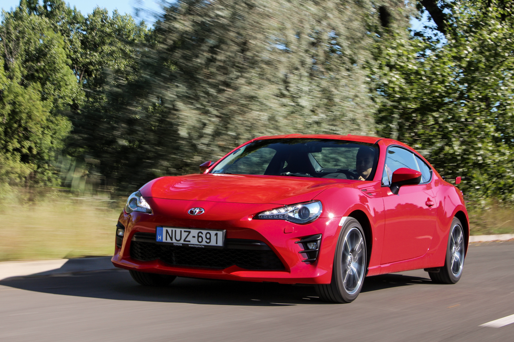

GT86

A Toyota GT86 egy orrmotoros, hátsókerék-meghajtású sportkupé, amelyet a Toyota és a Subaru közösen fejlesztett ki, és 2012-től 2021-ig gyártottak. A modell kifejezetten a tiszta vezetési élményre fókuszál, szívét egy alacsonyan elhelyezett, 2,0 literes, szívó négyhengeres boxermotor adja, amely évjárattól és piactól függően mintegy 197–205 lóerős teljesítményt nyújt. Ennek az elrendezésnek köszönhetően az autó rendkívül alacsony súlyponttal és kiváló, 53/47 arányú első-hátsó súlyelosztással büszkélkedhet. Bár nem a nyers egyenesfutási sebességéről híres – a 100 km/h-s sprintet nagyjából 7,6 másodperc alatt teljesíti –, könnyű, mintegy 1200 kg-os tömege és precíz irányíthatósága miatt kiemelkedően agilis a kanyarokban. A legendás Toyota AE86 és a 2000GT szellemi örököseként a GT86 a klasszikus, elérhető árú sportautós értékeket hozta el a modern korba, így világszerte az autórajongók egyik nagy kedvencévé vált. A modell kulturális ikon státuszát és népszerűségét tovább erősíti az MF Ghost című manga- és animesorozat (a legendás Initial D szellemi folytatása) is. A történetben a főszereplő, Kanata Rivington egy piros Toyota 86 volánja mögött száll harcba a jóval erősebb európai szuperautókkal, a gyakorlatban is bemutatva az autó legfőbb erényét: azt, hogy a kanyargós hegyi utakon a kiváló egyensúly és a precíz irányíthatóság olykor többet ér a nyers motorteljesítménynél.